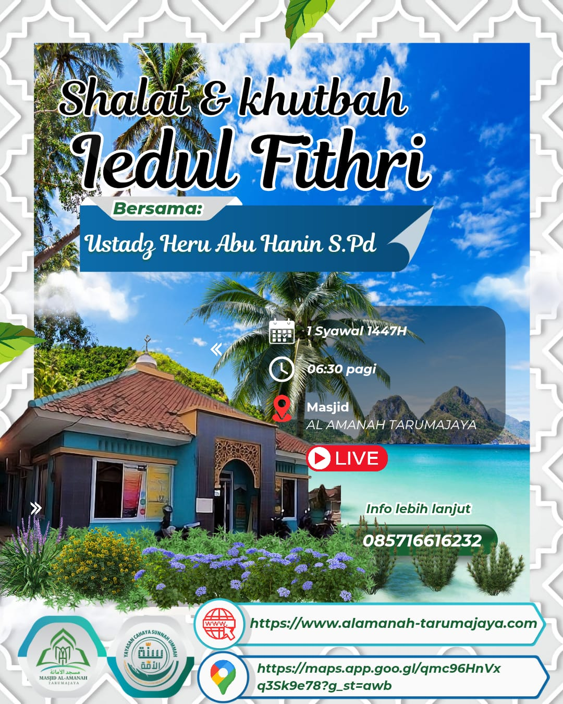

1 Syawal 1447H
Shalat & Khutbah Idul Fitri 1447H Bersama Ustadz Heru Abu Hanin S.Pd
Mari raih kemenangan di hari yang fitri! Masjid Al Amanah Tarumajaya mengundang seluruh jamaah untuk hadir dalam Shalat Idul Fitri pukul 06:30 WIB. Khutbah akan disampaikan oleh Ustadz Heru Abu Hanin S.Pd.
Lokasi: Masjid Al Amanah Tarumajaya
Info Live: Tersedia di kanal resmi Masjid Al Amanah.
WA: 085716616232